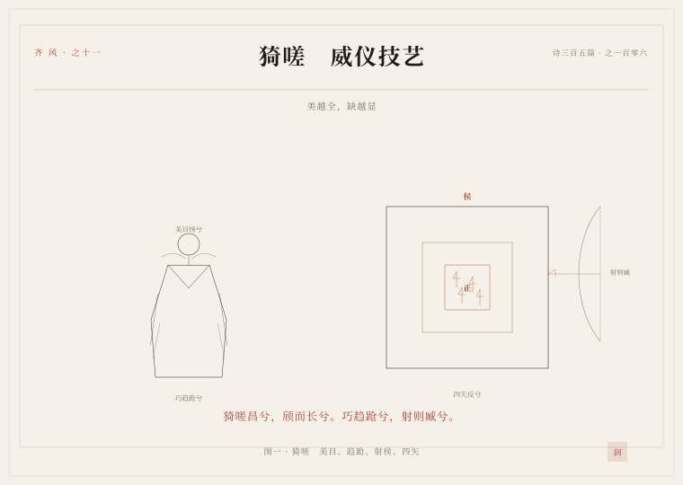
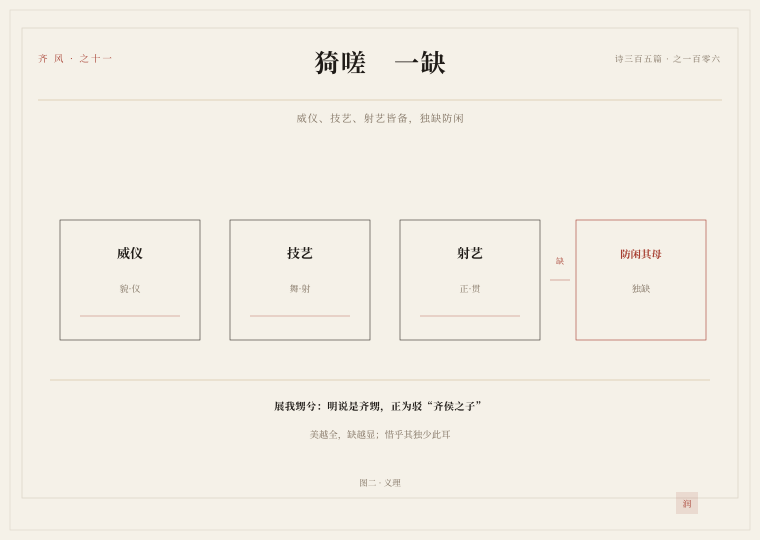

第一百零六篇 猗嗟
齐风 · 之十一 SJ106
朗读 · 普通话
依经文原文朗读，章次不读出；配古琴底乐，不改速、不加拖腔。全库同一音色（豆包 TTS），非播音员录制。
一 解题
诗三判：
- 谁在说：齐人。见鲁庄公威仪技艺之美，惜其不能防闲其母文姜。
- 说什么事：三章由貌到仪到艺。昌、名、娈；颀长、美目、趋跄、射臧；仪成、射侯、不出正、展我甥；舞选、射贯、四矢反、以御乱。
- 为何编在此：105 写“路”，106
写“人”。路是示恶，人是惜美；齐风终于“美中缺”。
《毛序》：“《猗嗟》，刺鲁庄公也。齐人伤鲁庄公有威仪技艺，然而不能以礼防闲其母，失子之道，人以为齐侯之子焉。”
朱子《诗集传》：“赋也。猗嗟，叹辞。昌，盛也。颀，长貌。抑而若扬，美之盛也。扬，目之动也。跄，趋翼如也。臧，善也。齐人极道鲁庄公威仪技艺之美如此，所以刺其不能以礼防闲其母，若曰惜乎其独少此耳。……名，犹称也，言其威仪技艺之可名也。清，目清明也。仪既成，言其终事而礼无违也。侯，张布而射之者也。正，设的于侯中而射之者也。展，诚也。姊妹之子曰甥，言称其为齐之甥，而又以明非齐侯之子，此诗人之微词也。……选，异于众也，或曰齐于乐节也。贯，中而贯革也。四矢，礼射每发四矢；反，复也，中皆得其故处也。言庄公射艺之精，可以御乱。”
本库的看法：《猗嗟》是一首把“美”写成“缺”的诗。
威仪、技艺、射艺三层写满：貌美、目清、趋跄、射正、舞选、贯革、四矢反。独缺“防闲其母”。
美越全，缺越显；末句“展我甥兮”是骨——明说是齐甥，正为驳“齐侯之子”的流言。
先辨五事：“猗嗟”是叹辞，不是人名；“昌”是盛/佼好，不是“昌盛之国”；“名”是称，不是“名字”；“正”是靶心，不是“正邪”；“甥”是姊妹之子，不是“外甥”泛称。
二 经文
第一章
猗嗟昌兮，颀而长兮。
抑若扬兮，美目扬兮。
巧趋跄兮，射则臧兮。
第二章
猗嗟名兮，美目清兮。
仪既成兮。
终日射侯，不出正兮。
展我甥兮。
第三章
猗嗟娈兮，清扬婉兮。
舞则选兮，射则贯兮。
四矢反兮，以御乱兮。
分章：三章，章六句。
三 韵读
- 一章：昌、长、扬、扬、跄、臧，阳部。
- 二章：名、清、成、正、甥，耕部。
- 三章：娈、婉、选、贯、反、乱，元部。
读法：阳部亮，耕部清，元部收；貌—仪—艺，一层比一层内，韵一层比一层收。
四 字义与名物
- 猗嗟：叹辞，叹其美，也叹其缺。昌：盛、佼好。
- 颀：长貌。抑若扬：抑扬有致，美之盛。美目扬：目动/眉扬。
- 巧趋跄：趋步有节，翼如。臧：善。
- 名：称；威仪技艺可称。清：目清明。仪既成：行礼终事无违。
- 侯：射布；正：侯中靶心。展：诚。甥：姊妹之子。
- 娈：好貌。清扬婉：眉目清而婉。选：出众/齐于乐节。贯：中而贯革。反：四矢复故处。御乱：御四方之乱。
五 今译
叹他昌盛啊，颀然而长。抑扬有致啊，美目扬动。巧步趋跄啊，射则善。
叹他可称啊，美目清明。仪礼既成啊。终日射侯，不出靶心啊。真是我齐国的甥啊。
叹他美好啊，眉目清婉。舞则出众啊，射则贯革啊。四矢皆复故处啊，可以御乱啊。
六 章旨
- 一章：写“貌”与“趋射”。昌、颀、扬、跄、臧，五官四肢皆美；美在身。
- 二章：写“仪”与“正”。名、清、仪成、射侯、不出正、展我甥；美在礼，也在“甥”一字。
- 三章：写“艺”与“御乱”。娈、婉、选、贯、四矢反、御乱；美在艺，推到“御乱”的用。
- 总收：威仪技艺皆备，独缺防闲其母；美越全，缺越显。
末句“展我甥”是骨：越是证明，越见流言之毒。
七 诗教
- 赋：直陈威仪技艺；赋到极美，刺在“独少”。
- 观：观“失子之道”。子不能防闲母，非力不足，是礼不行；一国之风，系于一家。
- 群：齐人作诗，鲁君受刺；邻国之议，比本国之谏更狠。
- 怨：诗里有惜，无怨。惜是怨的体面。
八 分寸与边界
- 不可把“猗嗟”当人名。它是叹辞；一读人名，全诗就成赠人。
- 不可把“甥”当外甥泛称。它是姊妹之子；一读泛称，末句的“微词”就没了。
- 不可把“正”当正邪。它是靶心；一读正邪，射礼就成道德。
- 不可把“四矢反”当箭返回。它是四矢复故处；一读返回，射艺就成神怪。
- 不可把诗当赞庄公。三章句句美，末句句句惜；一读赞美，毛序就落空。
九 存疑
- 诗旨：毛序“刺鲁庄公，不能防闲其母”；朱子同，以“展我甥”为微词。本库从“美中缺”读。
- “展我甥”：毛传“外孙曰甥”；朱子“姊妹之子曰甥”。从朱子，才与文姜、襄公关系合。
- “选”：毛传“齐”；朱子“异于众”/“齐于乐节”。两读皆通。
- “四矢反”：毛传“四矢，乘矢”；朱子“复故处”。从复故处，才见善射。
- 庄公是否齐侯之子：朱子明言“诚非齐侯之子”；诗是微词，不是史判。
十 跨典
- 《左传·庄公二年》：“夫人姜氏会齐侯于禚，书奸也。”——文姜会后齐侯；此诗“不能防闲”之史证。
- 《礼记·表记》：“君子不失足于人，不失色于人，不失口于人。”——威仪之重；此诗写威仪极美，正衬“失子之道”。
- 《诗经·齐风·南山》：“鲁道有荡，齐子由归。”——同一文姜；南山刺其始，猗嗟惜其终。
- 《诗本音》：三章阳、耕、元，见卷五；韵部按古韵推定。
十一 双卡与图
双卡八对：
| 猗嗟（叹辞） |
猗嗟（人名） |
| 昌（盛/佼好） |
昌（昌盛之国） |
| 名（称） |
名（名字） |
| 正（靶心） |
正（正邪） |
| 甥（姊妹之子） |
甥（外甥泛称） |
| 选（出众/合乐） |
选（选择） |
| 贯（中而贯革） |
贯（贯穿泛称） |
| 四矢反（复故处） |
四矢反（箭返回） |

图一 · 猗嗟 美目、趋跄、射侯、四矢

图二 · 猗嗟 威仪技艺与“独缺”
读图三处：
- 不画脸：图一左侧一位鲁君，只画冠、衣、手、足；美目用两笔眼线，不画五官。
- 射侯与四矢：图一右一张侯，侯中一“正”，四矢皆插正内；箭不画羽，只画杆与镞。
- “缺”在右下：图二上排“威仪/技艺/射艺”三满格，下排“防闲其母”一格空；空一格，全诗就成立。